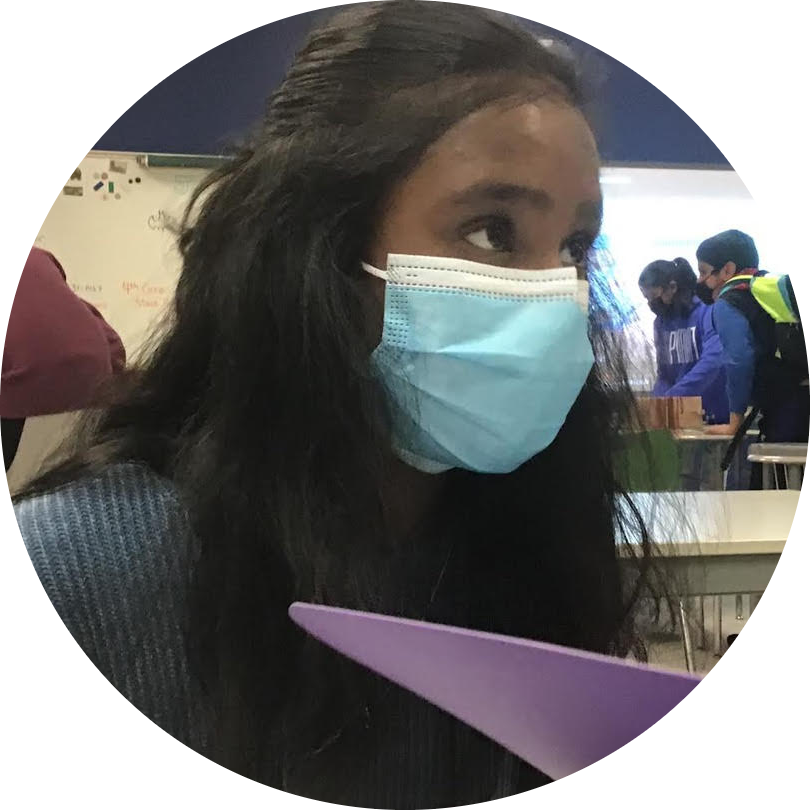

|  |
I am currently learning HTML, CSS, Java, as well as Python. I am the youngest professor at NYU in the matchmaking field. I ❤ to bake and have a succesful baking business. I am a renowned environmentalist and also have my Masters in Pyschology. |
| Dates | Work |
|---|---|
| 2016-2019 | Graduated from New York University with Bachelors in Environmental Science, Masters in Matchmaking, and Doctoral in Pyschology. |
| 2018-2019 | Worked as a reseracher at the NYU Department of Pychology |
| 2019-2020 | Worked as a private Medical Scientist to find a cure for eczema |
| 2019 - Present | Found and opened the bakery Emo Macarons |
| 2020-2021 | Taught Pyschology at NYU |
| 2021 - Present | Started teaching Matchmaking at NYU |
|
|